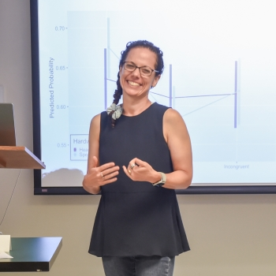
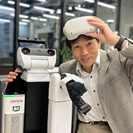
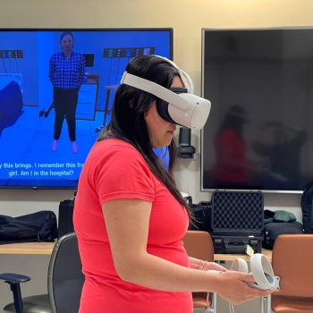

Third Workshop on AI and AR/VR for Exergaming (AIVR4Exergame)
The workshop will be held in-person (with remote options) at the Osaka University Toyonaka Campus, in Toyonaka, Osaka, Japan, and is co-located with IEEE AIxVR 2026.
SCHEDULE
All times are local to Osaka
- 9:00am to 9:15am: Opening Remarks by Workshop Organizers Dr. Sean Banerjee and Dr. Natasha Banerjee (Terascale All-sensing Research Studio at Wright State University, USA)
- 9:15am to 10:15am: Invited talk by Dr. Anat Lubetzky, Associate Professor, Department of Physical Therapy, New York University, United States: "Virtual Reality Applications in Balance and Rehabilitation Sciences"
- 10:15am to 10:25am: Paper Session: Enhancing Intrinsic Motivation Through Difficulty Adaptation Based on Personality in a VR Exergame: Yusuke Goutsu and Tetsunari Inamura
- 10:25am to 10:35am: Paper Session: Card. I/O: Exercise Data-driven AI Generative Content in Immersive Exertion Interaction for Personal Informatics Reflection: Kuan Ning Chang, Yu-Hin Chan, Tse-Yu Pan, Chien-Hsing Chou and Ping-Hsuan Han
- 10:35am to 10:45am: Paper Session: Kinesthetic Drills for Enhancing Children's Engagement in Four Basic Arithmetic: Itsuki Arita and Nobuyuki Umezu
- 10:45am to 11:00am: Coffee Break
- 11:00am to 12:00pm: Invited talk by Dr. Tetsunari Inamura, Professor, Brain Science Institute Advanced Intelligence & Robotics Research Center, Tamagawa University, Japan: "Self-Efficacy–Driven AR/VR Exergaming for Assistive and Rehabilitation Technologies"
- 12:00pm to 1:30pm: Lunch
- 2:30pm to 2:40pm: Paper Session: Breath-Controlled Virtual Reality using Thermal Thin-Medium Imaging: Breawn Schoun and Min-Hyung Choi
- 2:40pm to 2:50pm: Paper Session: Challenges in the use of virtual reality by older adults: Victoria Silva, Marcio Catapan, Camila Tempesta and Lucas Gregory
- 2:50pm to 3:00pm: Paper Session
- 3:00pm to 3:30pm: Coffee Break
- 3:30pm to 4:30pm: Invited talk by Dr. Annie Wan, Associate Professor, Faculty of Creative and Critical Studies, University of British Columbia (Okanagan Campus), Canada: "V CARE: A Virtual Reality (VR) Artificial Intelligence (AI) Assisted Training Tool for Alzheimer’s Caregivers 2.0"
INVITED TALKS
The 2026 edition of the Workshop on AI and AR/VR for Exergaming (AIVR4Exergame) held in conjunction with the 2026 IEEE International Conference on Artificial Intelligence & extended and Virtual Reality (AIxVR) will host as invited speakers:
Invited Talk: Dr. Anat Lubetzky, Associate Professor, Department of Physical Therapy, New York University, United States
Title: Virtual Reality Applications in Balance and Rehabilitation Sciences
With recent advances in virtual reality technology, head-mounted displays (HMDs) are currently affordable and accessible. Low latency and accurate head tracking as well as the ability to systematically manipulate the environment complexity tracking provide a unique opportunity to study the mechanisms of balance disorders, especially sensory integration. Paradigms combining HMD and brain imaging also allow for better understanding of how the brain controls balance. HMD’s portability enables research outside the lab in clinics and the community at large (e.g., schools).
Dr. Anat Lubetzky, PT, PhD, CSCS, is an Associate Professor at New York University, Department of Physical Therapy, and the Director of NYU Steinhardt’s PhD Program in Rehabilitation Sciences. Her work has been funded by the NIH and the Hearing Health Foundation. In this talk Dr. Lubetzky will share her lab’s journey through multiple research designs: Mechanistic studies to better understanding study sensory integration for postural control and how the brain controls balance; Clinical studies to develop and validate instrumented assessments of balance, and Intervention studies using HMD for balance rehabilitation and exergaming to reduce stress in high-schoolers.
Invited Talk: Dr. Tetsunari Inamura, Professor, Brain Science Institute Advanced Intelligence & Robotics Research Center, Tamagawa University, Japan
Title: Self-Efficacy–Driven AR/VR Exergaming for Assistive and Rehabilitation Technologies
In healthcare and rehabilitation contexts, AR/VR exergaming has gained attention as an engaging way to promote physical recovery. Yet engagement alone is insufficient for sustained improvement—users must also develop confidence in their own abilities. This talk introduces a self-efficacy–driven approach to AR/VR exergaming that integrates AI, VR illusion systems, and assistive robotics. The proposed framework emphasizes gradual mastery, adaptive feedback, and reflective interaction, enabling users to experience success and regain a sense of control over their bodies and actions. By showcasing examples of VR-based exergames and assistive scenarios, we discuss how such systems can support both physical training and mental well-being. The talk concludes by outlining future directions for AI-powered exergaming as a core component of human-centered assistive and rehabilitation technologies.
Dr. Tetsunari Inamura is a Professor and Head of the Advanced Intelligence & Robotics Research Center at Tamagawa University, Japan. In 2010, he developed SIGVerse, an open platform for simulating human–robot interaction (HRI), which has been used more than 5,000 times worldwide. He has organized the RoboCup@Home Simulation League for over a decade and currently serves as Chair of the RoboCup Japan Committee for the @Home League. He also serves as Co-Chair of the IEEE RAS Technical Committee on Cognitive Robotics and as a member of the Steering Committee of IEEE Transactions on Cognitive and Developmental Systems. He is currently Vice President and a Fellow of the Robotics Society of Japan (RSJ). His research interests include learning from demonstration, symbol emergence, assessment of Human-Robot Interaction(HRI) quality, VR-based HRI systems, and affective computing for assistive robotics.
Invited Talk: Dr. Annie Wan, Associate Professor, Faculty of Creative and Critical Studies, University of British Columbia (Okanagan Campus), Canada
Title: V CARE: A Virtual Reality (VR) Artificial Intelligence (AI) Assisted Training Tool for Alzheimer’s Caregivers 2.0
Around 800,000 Canadians are currently coping with Alzheimer's or a similar form of dementia, placing significant physical and emotional strain on their caregivers. We positioned AI and VR training as a crucial resource in alleviating caregiver stress, boosting confidence in their roles, and fostering a more supportive societal attitude towards Alzheimer's. Our research also aims to enhance awareness and support for Alzheimer's caregivers, and to disseminate this support through three training workshops in Greater Vancouver in 2024. By advocating for and contributing to positive changes in healthcare practices, this project seeks to empower caregivers and promote inclusive attitudes toward Alzheimer's within society.
Dr. Annie Wan is currently an Associate Professor at Faculty of Creative and Critical Studies, University of British Columbia (Okanagan Campus), Canada, as well as an international digital media scholar and practitioner, primarily research interests in adopting extended realities and intelligence technologies for well-being and for social good. Dr. Wan’s research focuses on innovating artistic and socially motivated design through creative media by means of gamification in digital heritage preservation, museums archives and digital conservation; employing creative media for the socially disadvantaged by means of adopting extended realities and intelligence technologies for well-being.
ABOUT
AI-enabled AR/VR-based exergames have the potential to enable a broader spectrum of users to participate in rehabilitative and fitness activities in immersive social environments that provide continual feedback to improve performance and incentivize continued usage. However, consumer grade AR/VR systems do not yet have the full capabilities needed to realize exergaming at scale. These challenges include, but are not limited to AI feedback algorithms that can run on untethered systems, long-term usage comfort due to system bulkiness, inability to simulate real-world attributes such as weight and resistance, novel exercise routine generation, and multi-user latency.
Through invited talks, demos, papers, and posters, AIVR4Exergame will bring researchers and industry practitioners together to discuss these new emerging research challenges and technologies. Following topics are of interest.
- Design of exergames to facilitate long-term continued usage
- Privacy and security and related topics for AI and AR/VR use in exergaming
- Ethical considerations for use of AI for AR/VR-based exergaming
- Design of AI algorithms that provide closed-loop feedback to enable continued usability
- Design of AI algorithms for assessing and correcting virtual interactions for safe usage
- Design of AI algorithms to generate novel exercise routines
- Simulating the real-world in AR/VR (e.g., weight, friction, resistance)
- AI techniques for movement tracking using smartphone sensors for smartphone-based AR/VR exergaming
- Incorporating haptics and biofeedback to ensure safe interactions in immersive AR/VR environments
- Effectiveness of AI-enabled AR/VR-based exergaming through results from case studies
- Emergent hardware platforms to enable broader uptake of AR/VR-based exergames
- Long term physical and psychological effects of exergaming in AR/VR
- Co-located and remote social environments for AR/VR exergaming
- Designing rehabilitative AR/VR exergames for children, older adults, and individuals with disabilities
- AR/VR-based tele-rehab server platform to connect participants from remote locations
The workshop will be held in-person (with remote options) at the Osaka University Toyonaka Campus, in Toyonaka, Osaka, Japan, and is co-located with IEEE AIxVR 2026.
ORGANIZERS

Associate Professor
Terascale All-sensing Research Studio (TARS)
Wright State University


Assistant Professor
Terascale All-sensing Research Studio (TARS)
Wright State University